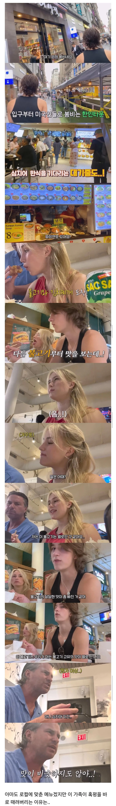

외국에서 한식이랍시고 중국인들이 개발새발 만들어서 내는 게 존나 많대매
ㅇㅇ
미국은 원래 개발새발 내놓긴하더라 미친놈들 영국욕할게 아니던데
사실 우리도 옛날엔 해외에서 한식당보다 일식당 차려서 이상한 맛으로 장사하긴 했음
원래 중국애들이 해외에서 요식업 많이 해. 이탈리안이랑.
존나많음
현지화 시킨 한식을 먹었구만...일본에서도 신오쿠보 한인타운 가서 먹어도...메인고객이 일본인이니까 한국인이 먹어보면 맛이 좀 갸우뚱 하고 그래
베트남애들이 고수안넣은 쌀국수 먹는느낌일까
한국밥 먹다 외국나가면 입에 안맞긴 해
저거 아버지가 ㄹㅇ 동안이시더라
호떡인가먹다가울던아재아니냐
저런곳에서 파는 음식들 먹고 한식 별로라고 생각할까봐 빡친다 한식 개맛있는데 ㅠ
아부지가 ㄹㅇ 존멋에 기타도 치고 엄청 멋진 가족
저정도면 그냥 한국인아니냐
슬픔의 심로 부른 부녀 가족인가
와,,, ㅋㅋ 저정도면 한국 국적 줘야되는거 아니냐 ㅋㅋ
고인물 만족시키기 쉽지 않긴 해